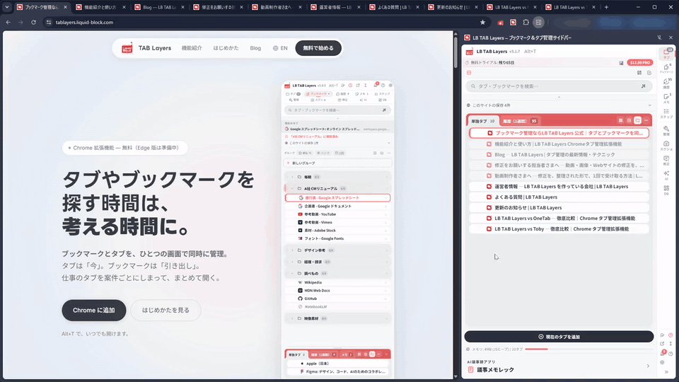
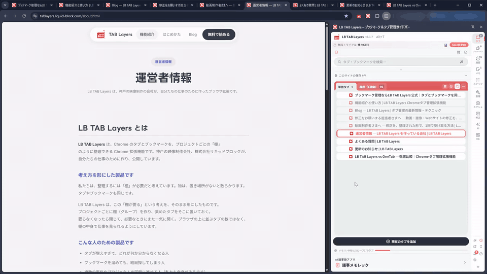
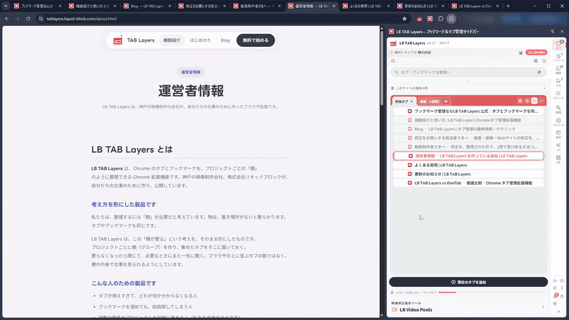
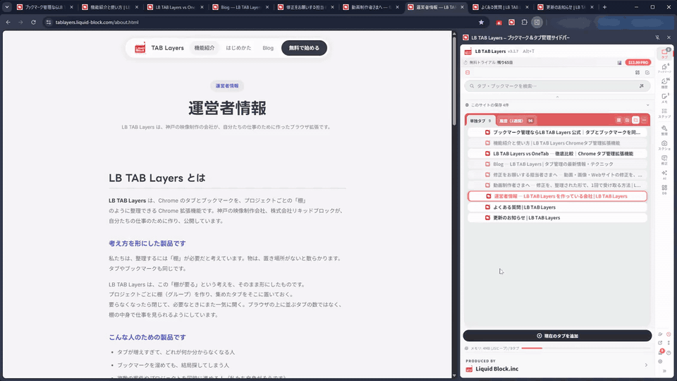
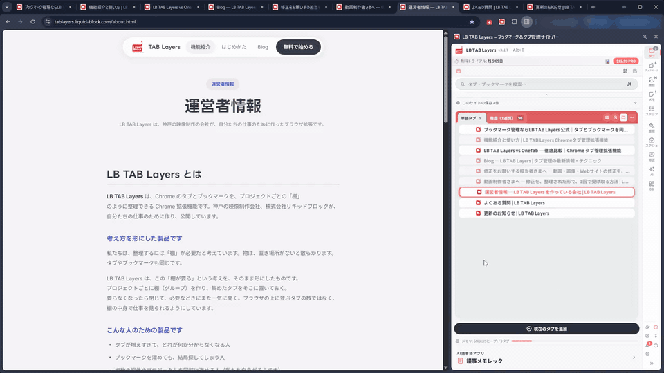
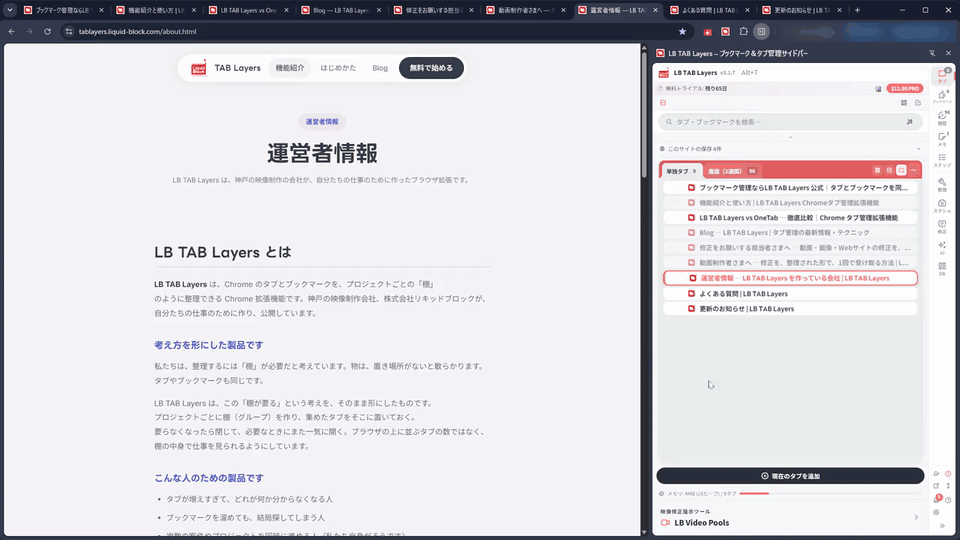
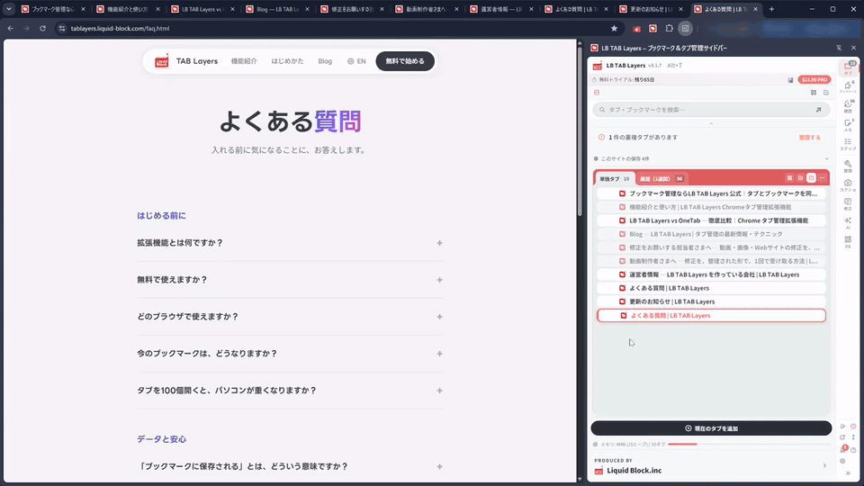
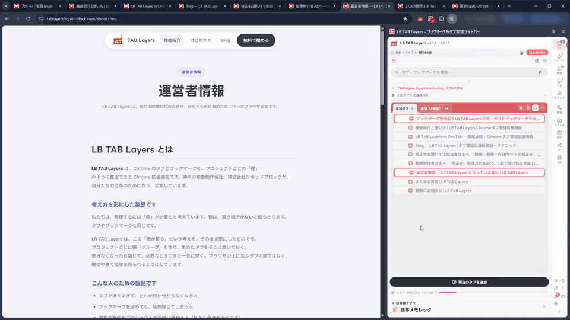
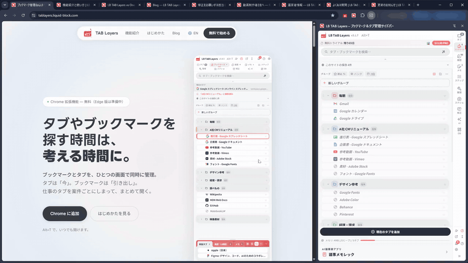

開いているタブの一覧
今のウィンドウのタブを、縦に並べる。保存済みのものは薄く出る
場所：「タブ」の画面
「タブ」の画面には、今のウィンドウで開いているタブが並びます。行を押すとそのタブに移り、× で閉じます。すでにグループに保存しているタブは、薄く表示されます。

今のウィンドウのタブを、縦に並べる。保存済みのものは薄く出る
場所：「タブ」の画面
「タブ」の画面には、今のウィンドウで開いているタブが並びます。行を押すとそのタブに移り、× で閉じます。すでにグループに保存しているタブは、薄く表示されます。

行を押すと、そのタブへ。× で閉じる
場所：タブの行
タブの行を押すと、そのタブに移ります。行の × で、そのタブを閉じます。
行にカーソルを置くと、題名・サイト・絵のカードが出る
場所：タブの行
開いているタブの行にカーソルを置くと、題名・サイト・ページの絵が、カードで出ます。絵は、設定 › プライバシー › サムネイル をオンにすると出ます。メールや銀行などのサイトは、絵を撮りません。PRO の機能です（お試し期間中は使えます）。

行をドラッグすると、ブラウザのタブの順番も変わる
場所：タブの行
「タブ」の画面で行をドラッグすると、ブラウザのタブの並びも同じように変わります。

開いているタブを、絵の格子で見る
場所：タブの画面の上
「タブ」の画面の上の「サムネイル表示にする」で、開いているタブを、ページの絵の格子で見られます。サムネイルの設定がオフのときは、オンにする案内が出ます。
まだ保存していないタブを、1 回でグループにする
場所：タブの画面の上
「タブ」の画面の上の「新しいグループにまとめる」で、まだ保存していないタブを、まとめて 1 つのグループに入れます。名前・説明・色・アイコンを決めて「作成」を押します。グループは、Chrome のブックマークのフォルダとして保存されます。

入れたいタブだけを選んで、グループへ
場所：タブの画面の上
「タブを選んでフォルダに入れる」を押すと、選ぶモードになります。入れたいタブを押して選び、「グループへ」から入れ先を選びます。

サイトごとに、グループを自動で作る
場所：タブの画面の「…」
「タブ」の画面の「…」から「ドメイン単位で自動グループ化」を選ぶと、まだ保存していないタブを、サイトごとのグループに分けます。無料版は、グループが 5 個までです。

今見ているタブ以外を、まとめて閉じる
場所：タブの画面の「…」
「タブ」の画面の「…」から、今見ているタブ以外を、まとめて閉じられます。確認は出ずに、すぐ閉じます。残したいタブは、先にグループへしまっておくと安心です。
同じページが 2 つ開いていると知らせ、まとめて閉じる
場所：自動で出る帯
同じページが 2 つ以上開いていると、パネルの上に知らせが出ます。「整理する」で、余分なタブを閉じます。グループに保存しているタブは残します。

15 個以上で忠告、100 個以上で警告。数は変えられる
場所：自動で出る帯／設定 › 使い方
タブが 15 個以上で忠告、100 個以上で警告が出ます。数は、設定 › 使い方 › お知らせ で変えられます。「あとで」を押すと、しばらく出ません。

タブ・ブックマーク・最近閉じたタブを、1 つの欄で探す。ひらがなやローマ字でも当たる
場所：パネルの上／Ctrl+F
パネルの上の検索の欄（Ctrl+F）で、開いているタブ・グループ・ブックマーク・最近閉じたタブを、まとめて探せます。ひらがな・ローマ字でも当たり、言葉を空白で区切ると、すべてを含むものに絞れます。Esc で消えます。

打った言葉の、Google の検索候補を出す。押すと検索する
場所：検索の欄の下
検索の欄に言葉を打つと、Google の検索候補が下に出ます。押すと、その言葉で検索します。候補を出すために、打った文字は Google に送られます。
見たページを、日と時刻つきで並べる。日・時間帯でしぼり、まとめて開き直せる
場所：「履歴」の画面
右の列の「履歴」で、この 1 週間に見たページを、日ごとに見られます（開いているタブは除きます）。日・時間帯でしぼり、「この時間帯を開く」で、まとめて開き直せます。PRO の機能です（お試し期間中は使えます）。
音の出ているタブを出し、再生・停止・位置・音量を、パネルから動かす。小窓にもできる
場所：パネルの上（自動）
音の出ているタブがあると、パネルの上に「再生中」の欄が出ます。再生・一時停止・再生位置・音量を、パネルから動かせます。小窓にもできます。PRO の機能です（お試し期間中は使えます）。